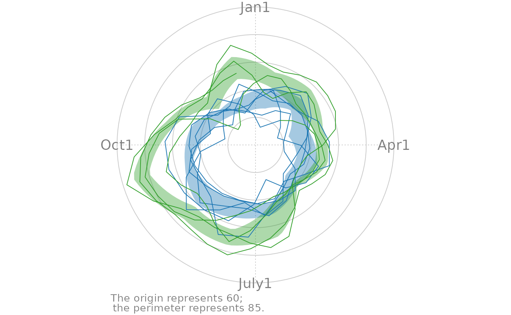
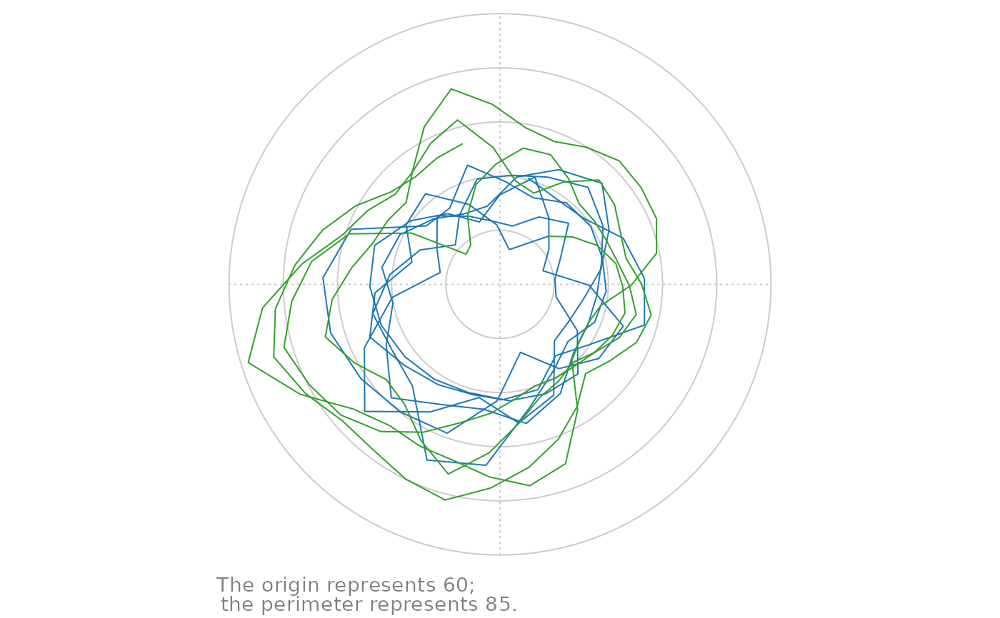
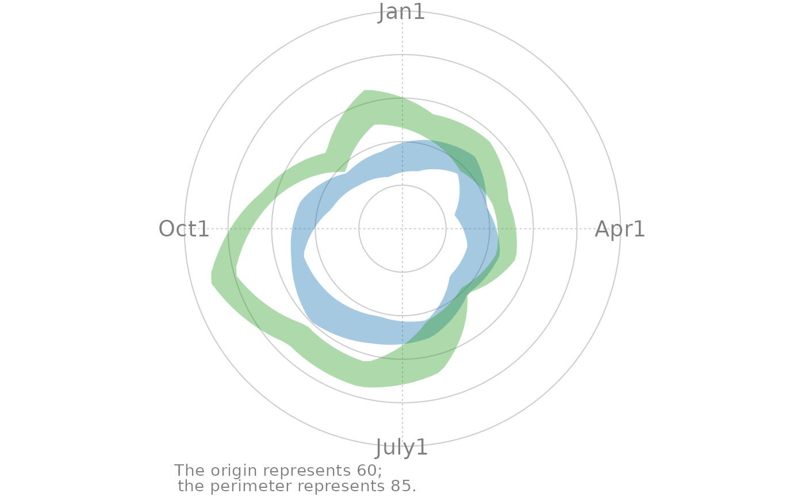

Shows the interrupted time series in Cartesian coordinates and its a periodic/cyclic components.
Usage
polar_periodic(
ds_linear,
ds_stage_cycle_polar,
x_name,
y_name,
stage_id_name,
periodic_lower_name = "position_lower",
periodic_upper_name = "position_upper",
palette_dark = NULL,
palette_light = NULL,
change_points = NULL,
change_point_labels = NULL,
draw_observed_line = TRUE,
draw_periodic_band = TRUE,
draw_stage_labels = FALSE,
draw_radius_labels = FALSE,
jagged_point_size = 2,
jagged_line_size = 1,
band_alpha_dark = 0.4,
band_alpha_light = 0.15,
color_labels = "gray50",
color_gridlines = "gray80",
label_color = "orange3",
change_line_alpha = 0.5,
change_line_size = 3,
tick_locations = base::pretty(x = ds_linear[[y_name]]),
graph_floor = min(tick_locations),
graph_ceiling = max(tick_locations),
cardinal_labels = NULL,
origin_label = paste0("The origin represents ", graph_floor,
";\nthe perimeter represents ", graph_ceiling, "."),
plot_margins = c(3.5, 2, 0.5, 2)
)Arguments
- ds_linear
The data.frame to containing the simple linear data. There should be one record per observation.
- ds_stage_cycle_polar
The data.frame to containing the bands for a single period. There should be one record per theta per stage. If there are three stages, this data.frame should have three times as many rows as
ds_linear.- x_name
The variable name containing the date.
- y_name
The variable name containing the dependent/criterion variable.
- stage_id_name
The variable name indicating which stage the record belongs to. For example, before the first interruption, the
stage_idis "1", and is "2" afterwards.- periodic_lower_name
The variable name showing the lower bound of a stage's periodic estimate.
- periodic_upper_name
The variable name showing the upper bound of a stage's periodic estimate.
- palette_dark
A vector of colors used for the dark/heavy graphical elements. The vector should have one color for each
stage_idvalue. If no vector is specified, a default will be chosen, based on the number of stages.- palette_light
A vector of colors used for the light graphical elements. The vector should have one color for each
stage_idvalue. If no vector is specified, a default will be chosen, based on the number of stages.- change_points
A vector of values indicate the interruptions between stages. It typically works best as a Date or a POSIXct class.
- change_point_labels
The text plotted above each interruption.
- draw_observed_line
A boolean value indicating if the longitudinal observed line should be plotted (whose values are take from
ds_linear).- draw_periodic_band
A boolean value indicating if the bands should be plotted (whose values are take from the
periodic_lower_nameandperiodic_upper_namefields).- draw_stage_labels
A boolean value indicating if the stage labels should be plotted (whose values are take from
ds_linear).- draw_radius_labels
A boolean value indicating if the gridline/radius labels should be plotted (whose values are take from
tick_locations).- jagged_point_size
The size of the observed data points.
- jagged_line_size
The size of the line connecting the observed data points.
- band_alpha_dark
The amount of transparency of the band appropriate for a stage's x values.
- band_alpha_light
The amount of transparency of the band comparison stages for a given x value.
- color_labels
The color for
cardinal_labelsandorigin_label.- color_gridlines
The color for the gridlines.
- label_color
The color of the text labels imposed on the line.
- change_line_alpha
The amount of transparency marking each interruption.
- change_line_size
The width of a line marking an interruption.
- tick_locations
The desired locations for ticks showing the value of the criterion/dependent variable.
- graph_floor
The value of the criterion/dependent variable at the center of the polar plot.
- graph_ceiling
The value of the criterion/dependent variable at the outside of the polar plot.
- cardinal_labels
The four labels placed where "North", "East", "South", and "West" typically are.
- origin_label
Explains what the criterion variable's value is at the origin. Use
NULLif no explanation is desired.- plot_margins
A vector of four
numericvalues, specifying the number of lines in the bottom, left, top and right margins.
Value
Returns a grid graphical object (i.e., a grid::grob().)
Examples
requireNamespace("grid")
library(Wats)
ds_linear <-
Wats::county_month_birth_rate_2005_version |>
dplyr::filter(county_name == "oklahoma") |>
augment_year_data_with_month_resolution(date_name = "date")
h_spread <- function(scores) { quantile(x = scores, probs = c(.25, .75)) }
portfolio <- annotate_data(
ds_linear = ds_linear,
dv_name = "birth_rate",
center_function = median,
spread_function = h_spread
)
rm(ds_linear)
polarized <- polarize_cartesian(
portfolio$ds_linear,
portfolio$ds_stage_cycle,
y_name = "birth_rate",
stage_id_name = "stage_id"
)
grid::grid.newpage()
polar_periodic(
ds_linear = polarized$ds_observed_polar,
ds_stage_cycle_polar = polarized$ds_stage_cycle_polar,
y_name = "radius",
stage_id_name = "stage_id",
cardinal_labels = c("Jan1", "Apr1", "July1", "Oct1")
)

grid::grid.newpage()
polar_periodic(
ds_linear = polarized$ds_observed_polar,
ds_stage_cycle_polar = polarized$ds_stage_cycle_polar,
y_name = "radius",
stage_id_name = "stage_id",
draw_periodic_band = FALSE
)

grid::grid.newpage()
polar_periodic(
ds_linear = polarized$ds_observed_polar,
ds_stage_cycle_polar = polarized$ds_stage_cycle_polar,
y_name = "radius",
stage_id_name = "stage_id",
draw_observed_line = FALSE,
cardinal_labels = c("Jan1", "Apr1", "July1", "Oct1")
)
